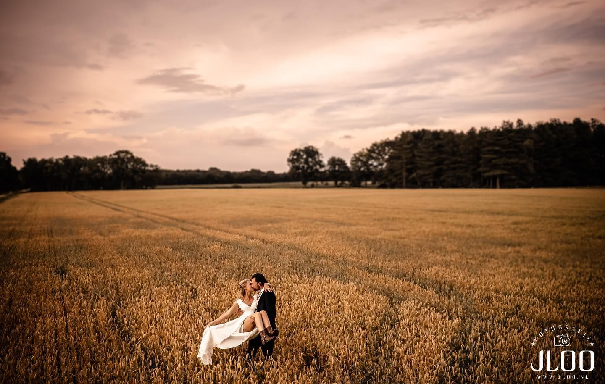
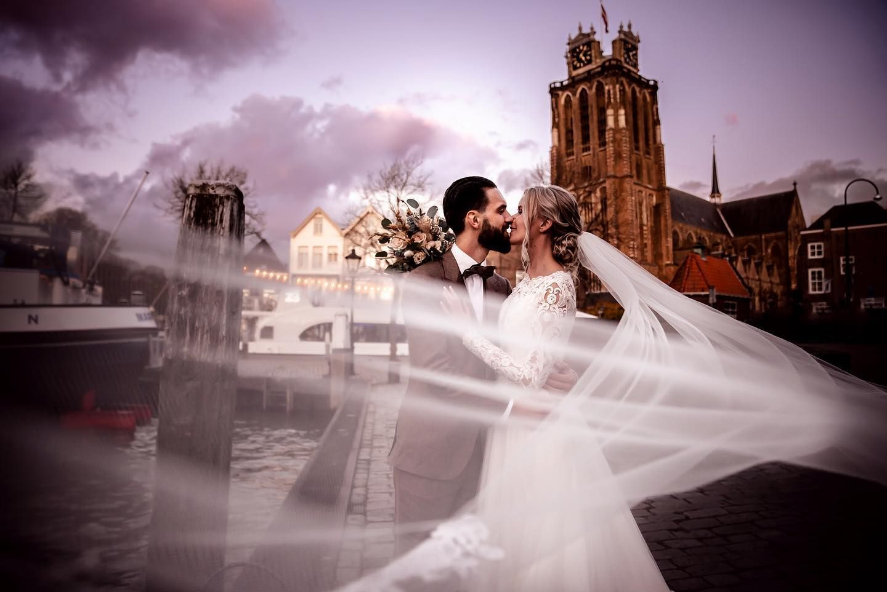
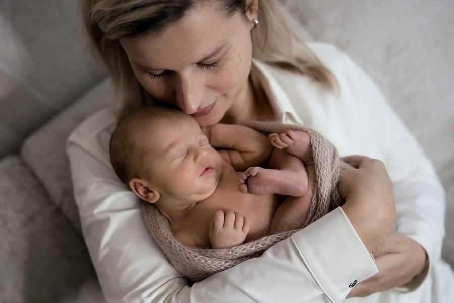
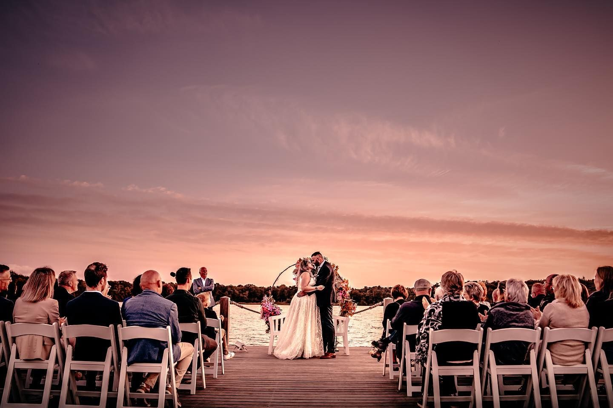
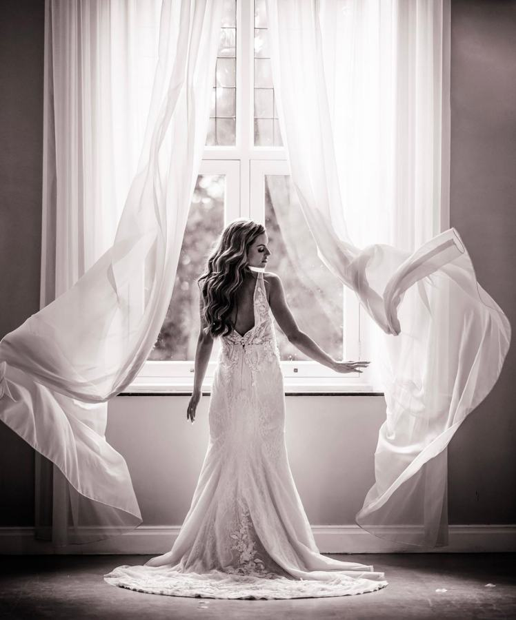
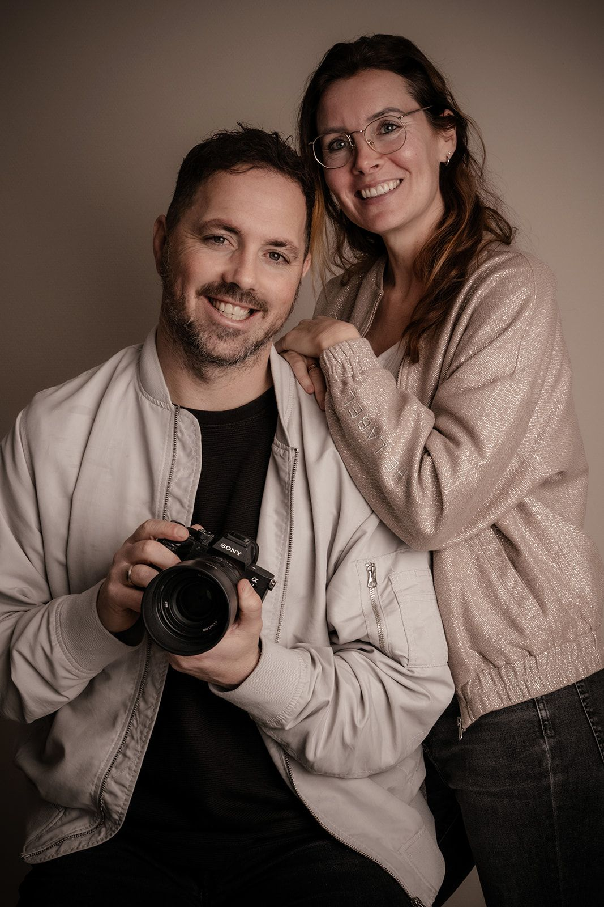

Fotografie JLOO · Herpt · sinds 2009
Liefde, gezin & de kunst van het vastleggen.
Bruiloft · Newborn · Gezin · Zwangerschap
Bekijk onze fotografie






Echte momenten, met aandacht vastgelegd. Zo mooi als ze waren.
Het volledige portfolioFotografie
Vier hoofdstukken uit het leven.
Elke fase vraagt om een eigen aanpak. Op de bruiloft zijn we onopvallend aanwezig. In de studio nemen we juist de regie, met rust en zorg voor jullie kleintje.



Jeffrey & Lionne
Twee fotografen. Eén passie.
Wij zijn Jeffrey en Lionne, getrouwd en samen ouders van drie kinderen. Sinds 2009 leggen we vast wat er echt toe doet: de dag waarop je ja zegt, de eerste dagen van je baby, het gezin dat je samen bent.
Omdat we zelf een druk gezin hebben, weten we hoe waardevol één goede foto kan zijn. Het gaat ons niet om een prijs in de kast, maar om jullie herinnering aan de muur.
Jeffrey
Bruiloften · fotografie
nabewerking
Lionne
Newborn · gezin
styling
Portfolio
Onze mooiste verhalen.
Geen losse plaatjes, maar reportages die je meenemen van het eerste tot het laatste beeld.


Fotografie met aandacht2009
Meer dan vijftien jaar vertrouwd met de momenten die ertoe doen.
“Wauw wat een prachtige foto’s! We zijn er echt heel erg blij mee. Het resultaat is super! Jullie beide bedankt voor de super mooie foto’s en de goede zorgen.”AnnatSprang-Capelle · Newborn
“Woowieee… echt super mooi de foto’s! Wij zijn er helemaal blij mee. Wij gaan er zeker eentje uitvergroot in de woonkamer hangen!”Roy, Alja & IsaBreda · Newborn
“Wij zijn super tevreden met het resultaat! Wat een engelengeduld hebben jullie toch.”Jamie HoegenWijchen · Newborn
Praktisch
Duidelijk vooraf, zonder verrassingen.
Alle pakketten zijn inclusief de onbewerkte foto’s in de hoogste resolutie, zonder tekst of logo.
Bruiloft
vanaf€1.700
- 6 uur fotografie (12 uur: €2.000)
- 200 bewerkte foto’s naar keuze
- Sneak preview binnen een week
Newborn
studioshoot€350
- Met papa, mama, broertje of zusje
- 10 bewerkte foto’s naar keuze
- Ideaal 7 tot 20 dagen na de geboorte
Gezin
op locatie€250
- 1 tot en met 5 personen
- 5 bewerkte foto’s naar keuze
- Een mooie locatie in de regio
Kennismaken
Een kop koffie in de studio of een belletje. We horen jullie wensen en denken mee.
De shoot
Ontspannen en zonder haast. Kleding wisselen mag, wij zorgen voor de rust.
Jullie selectie
Je ontvangt alle onbewerkte foto’s en kiest zelf je favorieten.
Nabewerking
Binnen 1 tot 5 weken ontvangen jullie de bewerkte foto’s.
Wanneer plannen we de newbornshoot?
Het liefst tussen de 7 en 20 dagen na de geboorte. Dan slapen baby’s nog veel en zijn ze het makkelijkst te positioneren. Reserveer rond de uitgerekende datum, dan schuiven we mee met de geboorte.
Wat trekken we aan?
Zachte natuurtinten komen het mooiste over, vooral bij groepsfoto’s. Kies voor kinderen rustige kleding zonder felle prints. We denken graag vooraf mee.
Hoeveel foto’s krijgen we?
Naast de bewerkte foto’s uit je pakket krijg je alle onbewerkte foto’s in de hoogste resolutie. Bij een bruiloft zijn dat er duizenden.
Hoe lang bewaren jullie de foto’s?
We bewaren de bestanden maximaal een jaar. Download ze dus op tijd en maak een back-up, of kies voor een USB-stick voor €30.
Komen jullie ook aan huis?
Newbornshoots doen we bij voorkeur in onze studio in Herpt, waar alles klaarstaat. Een sessie aan huis of op een vertrouwde locatie is in overleg mogelijk.
Kennismaken
Vertel ons over jullie moment.
Een trouwdatum, een uitgerekende datum of gewoon een idee: stuur ons een berichtje. We reageren binnen 24 uur en nodigen jullie graag uit voor een kop koffie in de studio.
gemeente Heusden